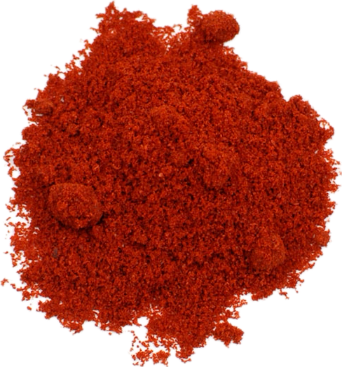

Capsicum annuum
Overview
Paprika is a spice derived from the dried and ground fruits of the Capsicum annuum pepper plant, native to Central and South America. It has a vibrant red color and a mild, sweet flavor with varying levels of heat, depending on the variety. Paprika is commonly used as a seasoning and garnish in cooking.
Cultural Overlap
Paprika is used in cuisines around the world, particularly in Hungarian, Spanish, and Moroccan cuisines. It is used to flavor meats, stews, soups, rice dishes, and sauces, as well as to add color to dishes. Paprika also has cultural significance in traditional medicine, where it is believed to have various health benefits, including improved digestion and circulation.